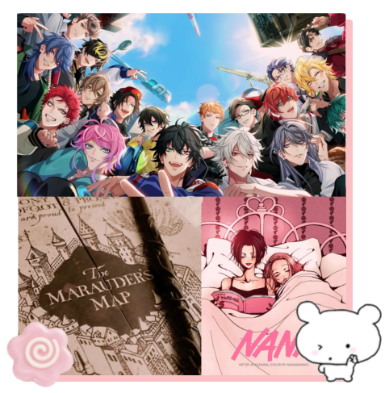

Florencia Castagnani
19 años ☆ 16/10 ☆ INFP ☆ Hufflepuff
Estudiante de Multimedia ☆ 2° año ☆ UNLP
Me gusta :3
Conejos
Frutillas
Estrellas
Hypnosis Mic
Sasara Nurude / Kuko Harai
Harry Potter / Los Merodeadores
Remus Lupin / Mary Mcdonalds
Nana
All The Young Dudes
